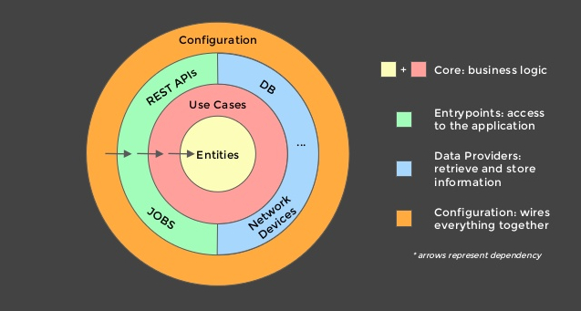
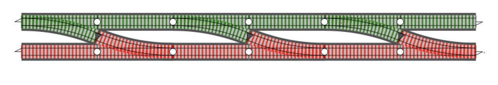

Divide and Conquer - Workshop
Who am I?
Pablo Aguilar
Passionate for challenges, technology, good code and functional programming enthusiast.
- Software Engineer at Globo.com
- Core Developer at dry-python
Divide
the code
Conquer
maintainability
We can divide our code in many ways, sometimes this division is called:
- Design Pattern
- Architectural Design Patterns
Flask minimal application
from flask import Flask
app = Flask(__name__)
@app.route('/')
def hello_world():
return 'Hello, World!'
Flask + Database
from flask import Flask
app = Flask(__name__)
app.config['SQLALCHEMY_DATABASE_URI'] = 'sqlite:////.db'
db = SQLAlchemy(app)
class User(db.Model):
id = db.Column(db.Integer, primary_key=True)
username = db.Column(db.String(80), unique=True, nullable=False)
email = db.Column(db.String(120), unique=True, nullable=False)
def __repr__(self):
return '<User %r>' % self.username
@app.route('/')
def hello_world():
return 'Hello, World!'
@app.route('/users', methods=['GET'])
def get_users():
return User.query.all()
Flask + Database + Marshmallow
from flask import Flask, request
from flask_sqlalchemy import SQLAlchemy
from marshmallow import Schema, fields, ValidationError
app = Flask(__name__)
app.config['SQLALCHEMY_DATABASE_URI'] = 'sqlite:////.db'
db = SQLAlchemy(app)
class User(db.Model):
id = db.Column(db.Integer, primary_key=True)
username = db.Column(db.String(80), unique=True, nullable=False)
email = db.Column(db.String(120), unique=True, nullable=False)
def __repr__(self):
return '<User %r>' % self.username
class UserSchema(Schema):
username = fields.Str()
email = fields.Email()
@app.route('/')
def hello_world():
return 'Hello, World!'
@app.route('/users', methods=['GET'])
def get_users():
return User.query.all()
@app.route('/users', methods=['POST'])
def create_user():
user_data = request.json
try:
validated_user_data = UserSchema().load(user_data)
except ValidationError as err:
return err.messages, 400
# We can have business logic here to validate something about the user
if is_valid_user(validated_user_data):
user = User(validated_user_data.username, validated_user_data.email)
try:
db.session.add(user)
db.session.commit()
except Exception as ex:
db.session.rollback()
return str(ex), 503
return user
If you do not choose the application architecture other people will choose for you
Sometimes your framework will choose for you, see the big example here:
Django enforces you to use its own architecture, you can try to modify it but if a plugin or something needs the original structure you can have some problems
Here, I'm going to talk about:
Clean Architecture

Entities
Use Cases
Enterprise Business Rules
vs
Application Business Rules
Interface Adapters
Frameworks & Drivers
Dependency Rule
“... the circles are schematic. You may find that you need more than just these four. There’s no rule that says you must always have just these four. However, The Dependency Rule always applies...” (Uncle Bob)
How can we implement in Python?
Few explanations before we start the code
I will use this schema instead of the first one
We'll use Result container from returns library, it's basically a container to help us with Railway Oriented Programming paradigm.
Example extracted from returns documentation
from returns.result import Result, Success, Failure
def find_user(user_id: int) -> Result['User', str]:
user = User.objects.filter(id=user_id)
if user.exists():
return Success(user[0])
return Failure('User was not found')
user_search_result = find_user(1)
# => Success(User{id: 1, ...})
user_search_result = find_user(0) # id 0 does not exist!
# => Failure('User was not found')
We're going to use these frameworks/libraries
Let's code!!
Final Considerations
Should I use Clean Architecture?
The Exception is not the problem
References
Find me on
Telegram / GitHub / Medium / Dev.to / Twitter
thepabloaguilar